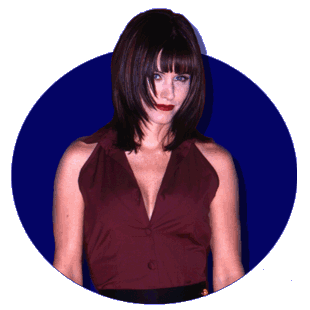

|
Birthsign: Scorpio
Parents: Storm and Nancy Weathers,
both reporters.
Birthplace: A news van on the 1-9 freeway.
Mom was in the middle of a story! They televised it. My first breath
was on camera!
Hometown: Oakland, New Jersey
High School: Oakland Prep
Activities: Editor-In-Chief, "The Oak".
Cheerleader.
Highlights: Investigative article on Mr. Wakowski (that jerk
math teacher) exposed his questionable video tape rentals.
College: The Columbia School of Broadcasting,
class of '91.
Favorite Sport: Hockey
Favorite Food: Salad (no dressing!)
Favorite TV show (all time): Murphy
Brown
Favorite TV show (present): (Besides
Total Entertainment, of course!) Ally McBeal, MTV's
Celebrity Deathmatch, Cops.
Least Favorite Show: 60 Minutes
II.
Favorite Movie: Broadcast News
- Holly Hunter is one tough chick.
Least Favorite Movie: All The President's
Men - what was that all about?
Favorite Color: Peach
Turn-ons: Watching The Emmys, catching
someone in a lie, rough sex.
Turn-offs: Laziness, people who watch
Hard Copy, Access Hollywood, Entertainment Tonight,
and foreign films.
Favorite Book: Wrongly
Accused: The Maureen Prescott Murder
Favorite Celebrity: Me, of course!
Least Favorite Celebrity: Geraldo
Favorite Outfit: My Soft-Touch bikini,
made out of fleece.
|